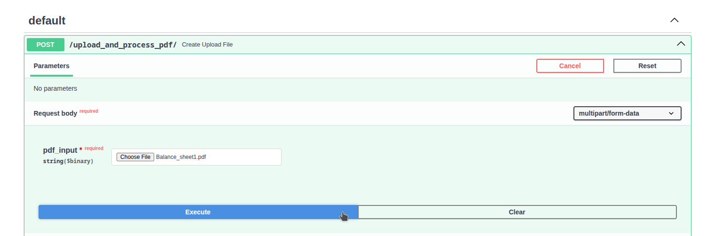
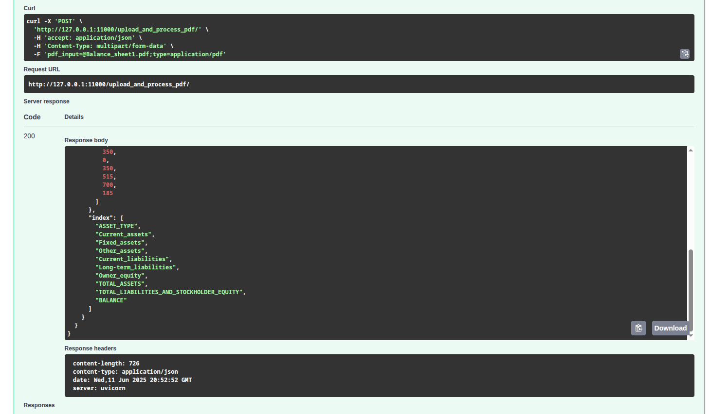

Uploading files with FastAPI
In the previous [post] we developed a simple Document Intelligence App that takes the paths of pdf files, processes them using a Class that encapsulates our "Document Intelligence" pipeline and finally saves a final csv file with the extracted table, while also returning the serialized Document model (along with the processed pages) back to the client. This is great but who would actually use such an app locally ? To be able to make this an actual application we need to be able to upload files that the pipeline can then process. Today we are going to use the Upload options from FastAPI.
[models.py]
OK now for the hard part... But wait, there is no hard part! FastAPI offers the class File so that we can define files to be uploaded. To start with in the original documentation [link] we are instructed to first download python-multipart so we can receive uploaded files. Uploaded files are sent like form-data and to upload forms , this library is required.
The first thing to remember is we need to go the path operation function that will actually upload the file (it is a post method) and define a class File for the input we want to upload. This is required because of forgotten FastAPI will intepret the inputs as query parameters or a json body. Then we can simply type hint the input with bytes and that means that FastAPI will read the file and we will receive the contents as bytes. But be careful the whole contents will be stored in memory. This is great for small files but for our case, since we do not know how large the pdf files might be we could probably benefit from trying out other options. And one such option is to use the Upload class! This will automatically store part of the file in memory up to a certain limit and then what remains will be stored in disk, which is great for larger files. It also exposes certain attributes like for example
- filename: the original filename
- content_type: string with the content type
- file: this is the actual file object we can use like ordinary files in python
The last point is really important.
This means we can use this file object with file methods like read or write.
The documentation informs us about this here [Link]
once again making life better! It says the methods we can call on the file
are async so we need to await them.
On the other hand if the need to read the file synchronously
appears we can call the method on the pdf_file.file
and process them in sync methods, so schedule them in different threads.
Using the async methods allows to combine reading the file
with aiofiles so we can read a file in chunks
and asynchronously! And that's all we are going to need.
Now we need to go to our class method
parsePdf
and just change the input from the Pydantic model we had created
to File(...) and FastAPI will expect a file upload there.
async def parsePdf(self, pdf_input: UploadFile = File(...)) -> dict[int, str]:
print("parsing pdf")
# print(pdf_input.pdf_path)
extracted_text: dict[int, str] = {}
# now read the pdf file asynchronously and write it to temp location
# disk + ram , then we need to process it
# and upload it write in predefined location --> ./filename
try:
async with aiofiles.open(pdf_input.filename, "wb") as f:
print(f"the whole file has size {pdf_input.size}")
contents = await pdf_input.read(4096)
read_bytes = 0
while contents:
# this should be customizable, the size
await f.write(contents)
read_bytes += 4096
contents = await pdf_input.read(4096)
print(f"total bytes read {read_bytes}\n")
except Exception:
raise HTTPException(status_code=500, detail="Problem uploading file")
# we assume file read is done and ok now
reader = PdfReader(pdf_input.filename)
self.number_of_pages = len(reader.pages)
print(f"This pdf has {self.number_of_pages} pages.")
extracted_text = {i: x.extract_text() for i, x in enumerate(reader.pages)}
# here call the classifier
print("extracted text is", extracted_text)
# initialize classifier and use it
doc_classifier = Templateclassifier()
all_pdf_text = "".join(
[f"\npage{i}\n" + x.extract_text() for i, x in enumerate(reader.pages)]
)
category = doc_classifier.doc_classify(all_pdf_text)
print("category is", category)
return extracted_text
As you can see here we asynchronously read the file
in chunks of 4096 bytes using the read
method on the original input file and write it temporarily. This is done in the
method that is used as the starting point of our pipeline.
If your use case is to only read the file then awaiting for
file read should be enough. Also it is great that other requests
can also be run to the server while reading is happening.
Of course we could potentially use a separate path operation
function, upload the file, save it and then call our pipeline
based on some certain file name or
file id.
This pipeline here assumes fast direct processing of the latest uploaded file
meaning we are in a hurry to extract those tables!
The line contents = await pdf_input.read(4096)
uses 4096 bytes to read each time and write it to a file, but this can be customized.
A simple method could be created to check size of the file
and decide what size of chunk we are going to read in memory at one time.
Also note here because i use the PdfReader i save the
file temporarily to process it easily by path.
And the final cherry on top is that we don't really need to do
anything else in our Class besides changing the call_pdf_pipeline function
so that it now takes as input the same type that parsePdf
expects and FastAPI will validate the whole pipeline correctly.
Now this is awesome!
async def call_pdf_pipeline(self, pdf_input: UploadFile) -> PDFmodeloutput:
...
[Testing the method]
Visiting the endpoint and uploading a file we can see that when we click execute button

And there it is! We get the same response as before. Our pdf processed and the csv saved.